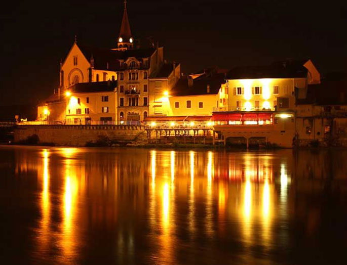
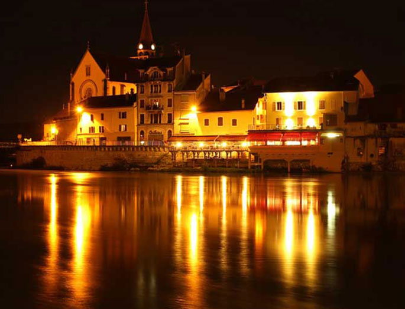

旅は心に潤いを与え、世界を広げてくれます。
FAVORITRIPは世界の素晴らしい景色や写真を通じて
旅の素晴らしさをお伝えするサイトです。
海外旅行情報やおすすめの旅スポットもお届けします。

一度は訪れたい国、モンゴル。豊かな自然に囲まれた草原の国では馬ものびのびと暮らしています。そんな馬達やモンゴル特有の移動式住居『ゲル』は首都のウランバートルから郊外に出ると見ることができます。
花の街・アムステルダムはオランダの首都。とはいえアムステルダムは憲法上の首都で事実上の首都はデン・ハーグです。アムスはキューケンホフ公園の見事な花々が有名ですね。
鹿児島のシンボル・桜島は日本を代表する活火山。陸繋がりなのに桜『島』という名前がついていて変ですが、大正時代の噴火で陸続きになるまではれっきとした島だったそうです。
 



 世界各地の美しい自然をお届けします
世界各地の美しい自然をお届けします